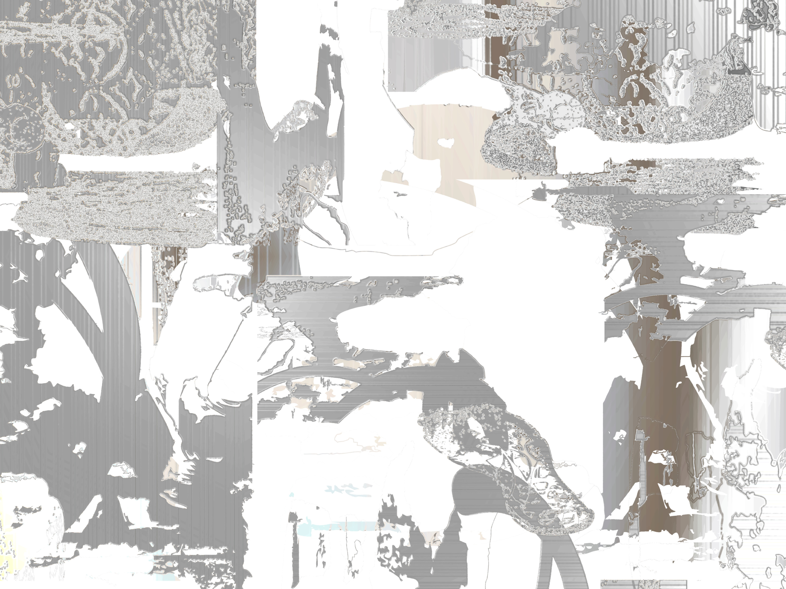
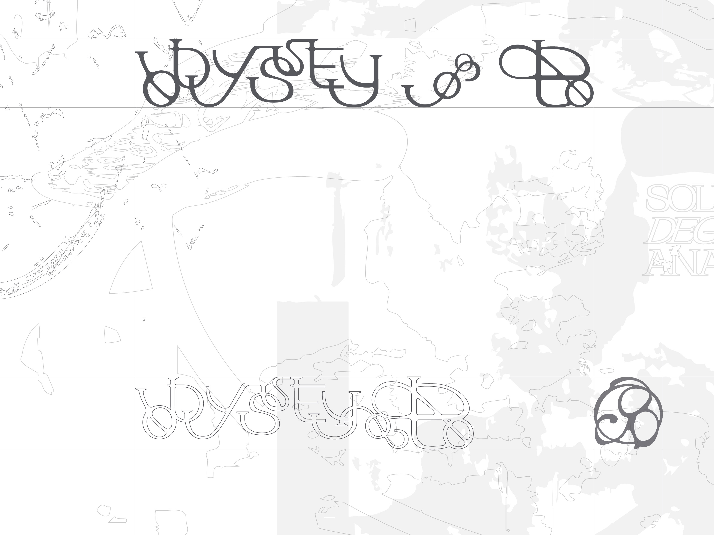
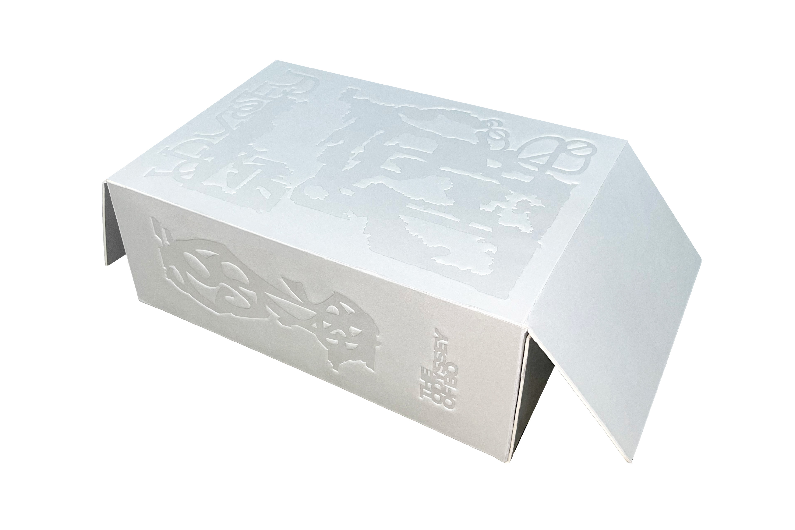
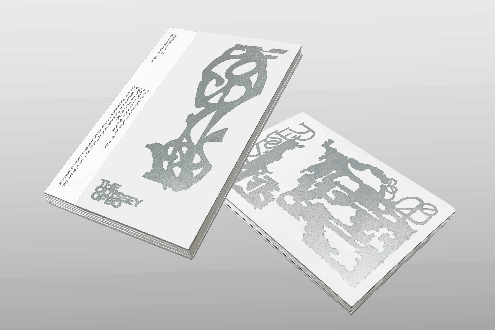

The Odyssey of Bo
최수영Sooyoung Choi

걸음 보(補). 이 마찰은 곧 수행이다. 우리의 이 걸음은 번뇌와 끈적하게
엉킨 불량궤적. 밑창이 지면에 패이고 갈린다. 무상을 육화할 때마다,
쓸모없는 물질은 기화한다. 해짐은, 역설의 보충. 불완전으로 완전해진다.
자성은, 그 소멸의 파편 속에서 비로소 투명해진다.
Trajectory of Friction: The sole is gashed and abraded upon the
terrain. This attrition is imminent discipline. Ablate. Manifest as
the 'Self'.
Contact
최수영
@odysseyofbo


